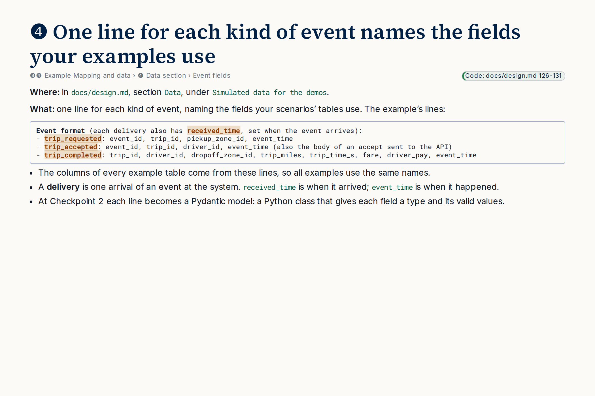

Checkpoint 2: review and the base running
Due Tuesday 1 December, end of day, with the tag cp2.
For Checkpoint 2, you continue working on demo scenarios, and, hopefully, start building the system. I will check only a small subset at the deadline, but you now have leases and recipes are available on Wed Nov 25, so nothing blocks you from creating infrastructure.
What to focus on:
- ① Design and requirement checks: run the new checks I provided on MCP, especially the budget check, and triage the results.
- to run a check, connect the course MCP server to your coding assistant (ilm.wiki/436c/mcp-setup) and ask it, for example, “Run the budget and sandbox check on our repository.” It writes one file in
docs/reviews/and changes nothing else in your repository or your lease; commit that file: it is your check report. - if you want to work without an LLM assistant, the content of the MCP checks is in the repo mcp-static-content: open your milestone’s folder and go through its questions by hand.
- the budget check is important because you don’t want to miss something putting you out of budget soon!
- together with the budget check, consider the RQs I left in your feedback issue: they should help you to plan better (but you can hand in the answers after cp2 if you are tight on time).
- the Checkpoint 2 check is based on the cp2 state I expect to see and on some typical errors I already know about.
- you can also run a Well-Architected review of your design with the AWS lens for your project shape, and build a first slice on AWS (guidance ① and ③), but don’t be overwhelmed by the output, pick what makes sense to account for.
- Remember, your coding assistant’s LLM model generates the output, so compare the results across team members, and triage. Decisions are on you!
- I expect to see at least one check report in the repo, and some evidence of triage and decisions in
requirementsanddesignmade based on the report (changes in both; decision lines go inrequirements) – you don’t have to fix everything!
- to run a check, connect the course MCP server to your coding assistant (ilm.wiki/436c/mcp-setup) and ask it, for example, “Run the budget and sandbox check on our repository.” It writes one file in
- ② Simulated data and demo scenarios: generate simulated data and create behave scenarios at least for some of your key job stories and requirements.
- your choice how to pace yourself before cp2: I expect to see at least (just?) one JS and a (sub)set of requirements for it at least partially covered at cp2, but realistically it would be good to cover more.
- use B5T2 as an example, and the guidelines included in MCP if they help to generate data, but essentially, how you approach this is largely up to you. I expect to have some test data files available, called and evaluated in behave scenarios, and making sense.
- make sure your sim data used in the behave scenarios is available to us: stored either in the repo or in a public S3 bucket, with paths in the behave scenarios; create such a bucket in your S3 account regional namespace (its name ends in
-<account-id>-ca-central-1-an), so that no other account can take or reuse its name. - we should be able to do a not-failing dry run on implemented scenario(-s).
- ③ Implementation: what you can build is up to you; I would set up at least a very small setup, maybe helping you to run your experiment (no report expected yet).
- ④ Required updates: With the tag
cp2, I expect to see some changes based on the guidance above inrequirements,design, and behave scenarios (feature and steps folders), and at least one check report in the repo.- You should continue to use issues and PRs in your repo and mention them in your requirements and design docs.
- ⑤ Getting ready for the project clinic: I would also focus on surfacing as many questions and issues as possible before our Dec 3 project clinic, so focus on what’s uncertain vs what’s easy, if you can.
- Everything else on this page should help you to focus on the right things, but you can sensibly change stuff.
- Recipes with the code should be ready by Wed Nov 25 EoD; before that, you can start on checking and updating requirements.
The example repository has a tag cp2 for the Checkpoint 2 submission, the same rides case as at Checkpoint 1, now running; it goes further than what you need for Tuesday (it also has the slice on AWS and the review). Compare it with its tag cp1 to see what changes between the checkpoints. You can reasonably deviate from the example, as long as all requirements from this page are satisfied. Tutorial B5T2 does the step code and the simulated data step by step on the rides case, and the course recipes give you the AWS parts.
What changes in your repository
The example repository at tag cp2 is a whole Checkpoint 2 hand-in, written for the rides case. Each file name below links to it in that state.
| your-repository/ | add | tag cp2 on main, after your last pull request is merged |
| ├── docs/ | ||
| │ ├── reviews/ | add | at least one check report: the file a check writes, such as budget-check.md |
| │ ├── requirements.md | change | what your triage changed; Decision (…) lines for the check findings your team decides not to change; RQ answers when you have them (they can come after Checkpoint 2) |
| │ ├── design.md | change | what your triage changed; if you build, the rows of ## Resources say what you deployed |
| │ └── review.md | optional | your Well-Architected review: the questions, your answers, and the change |
| ├── evidence/ | optional | if you deploy: what the deployed slice returned, kept before the clean-up |
| ├── sim/ | add | a generator for each simulated data set your scenarios use, and the data (or its path in a public S3 bucket) |
| │ └── data/SIM01/ | add | what the system receives; _truth/ inside it holds the events as they happened and any injected faults |
| ├── features/ | change | scenarios that run for at least one job story and its requirements; @todo on a scenario not implemented yet |
| │ └── steps/ | fill in | step code for the implemented scenarios |
| ├── src/ | optional | your system's code, as far as you build it |
| ├── tools/check_trace.py | change | the current traceability script: copy it from the example if yours is older or missing |
| └── scripts/ | optional | if you deploy: one script for each service, safe to run again, and teardown.sh, which deletes everything they create |
| File | What it shows | Traceability |
|---|---|---|
sim/ |
the data your demos run on: each simulated data set of ## Data, written by its generator |
the folder is the SIM ID (sim/data/SIM01/), the same ID as the bullet and the Given |
features/steps/ |
the code behind each Given, When and Then |
runs the rules tagged with IDs (@R010, @RF010) |
scripts/, src/ |
the slice on AWS and the code it runs | each resource is a row of ## Resources in docs/design.md, with its IDs |
evidence/ |
what the deployed slice returned | named in the Read: of the RF or RQ it answers (in the example, RF050 names evidence/deploy-tags.txt) |
docs/reviews/ |
what a check found, question by question | each line names its file and line; your decision lines name the check and question ID |
docs/review.md |
the questions you asked of your design and what changed | names the best-practice ID of each question and the file and line it is about |
At Checkpoint 1 your files said what you will build; at Checkpoint 2 some of it runs.
① Design and requirement checks
Run a check and triage its report
In the example repo: docs/reviews/budget-check.md and the decision lines in docs/requirements.md.
- Run the budget and sandbox check before you create anything in your lease (what it looks for: budget and sandbox check), and the Checkpoint 2 check. With the course MCP server connected, ask your assistant, for example, “Run the budget and sandbox check on our repository.” Without an assistant, go through the same questions by hand from the repository mcp-static-content.
- Each check writes one file in
docs/reviews/, such asdocs/reviews/budget-check.md, and changes nothing else. Commit at least one of these files. - Compare the reports of two team members who ran the same check: the assistant’s model writes them, so they differ. Keep what your team agrees is a real problem.
- For each item a check lists, decide: change it (in
docs/requirements.md,docs/design.mdor your scripts), or keep it and write a decision line indocs/requirements.md. - Run the check again after your changes: its part “Since the last run” says what is gone and what is new.
In the example repo: docs/requirements.md, Decisions.
A decision line says what your team decided about something a check listed. Two from the example: the first indented under the RF it concerns, the second a list item under ## Decisions, naming its resource:
Decision (budget-check BC020, t00-compact-events, PR #4): later, final hand-in. The nightly compaction job and its 00:30 UTC trigger are not created at Checkpoint 2: RF040's example runs on the local stand-in (src/rides/compact.py) and is tagged @todo; scripts/compact.py and the delete of the trigger and the job in scripts/teardown.sh come with them.
- Decision (budget-check BC010, t00-trip-events, PR #3): keep. The stream is the one resource of the slice that bills by the hour (0.0165 USD, 11.88 for 30 days); scripts/stream.py up creates it for a run or a demo, scripts/teardown.sh deletes it first, and nothing is kept between runs (docs/design.md, Resources).The answers are keep, later, <checkpoint> or check is wrong. The checks keep the item on their list with your reason beside it, and tools/check_trace.py lists every decision as DECISION. Ideally you would group pull requests: one pull request for each fix that belongs together, with the check ID in the pull request and the pull request number in your decision.
Problem: The team changes everything one report listed. Your assistant’s model writes the report, and two runs on the same files list different lines. The team must compare the reports of two members and decide: change what you agree is a problem, and write a decision line for what you keep.
Problem: A decision line is in docs/design.md. Every decision line must be in docs/requirements.md, under the requirement it concerns or under ## Decisions naming its item; tools/check_trace.py reports one anywhere else, see example below:
# Not this, in docs/design.md under ## Resources
- Decision (budget-check BC010, t00-trip-events, PR #3): keep. …
# This, in docs/requirements.md under ## Decisions
- Decision (budget-check BC010, t00-trip-events, PR #3): keep. …Problem: No check report is in the repository at the tag. At least one docs/reviews/<check>.md must be committed.
Requests (RQ) and constraints (RF)
In the example repo: docs/requirements.md, Stakeholder input.
At Checkpoint 1 you listed every RF and RQ of your feedback issue under ## Stakeholder input. Now:
| From the proposal feedback issue | What to do for Checkpoint 2 |
|---|---|
| Request (RQ …) | Together with the budget check, it helps you plan; the answer can come after Checkpoint 2. docs/requirements.md: its Reply: gives the answer: the calculation with its numbers and where they come from, or the test and its result. Its Read at Checkpoint 2: becomes Read:, and what it names exists |
Request that starts with Fix: |
nothing new: it keeps its Done in docs/proposal.md, section <n>. |
| Constraint (RF …) that a test can check | features/: the rule you wrote at Checkpoint 1 now has step code, and its examples run. docs/requirements.md: its line keeps its [Scenario](…) |
| Constraint we can’t test | docs/requirements.md: its Reply: says, in one or two sentences, how your design meets it, and its Read at Checkpoint 2: becomes Read:, naming what staff now read |
Problem: An answered RQ’s Reply: still says what you will do. When you answer it, it must give the answer.
Problem: The rule of an RF that a test can check has no step code. Its examples must run, and its line must keep its [Scenario](…).
Problem: A line still says Read at Checkpoint 2:, or names a section that does not exist. It must say Read:, and what it names must be in the file it names.
A Well-Architected review (optional)
In the example repo: docs/review.md.
A Well-Architected review asks questions about your design, one pillar at a time (operational excellence, security, reliability, performance efficiency, cost optimization, sustainability), and each answer can lead to a change. This step is optional at Checkpoint 2: don’t be overwhelmed by the output, pick what makes sense to account for. Choose three to five questions from the lens for your shape:
| Your project | Lens |
|---|---|
| lakehouse first, streaming, change data capture to the lake | Analytics Lens |
| operational first | Serverless Applications Lens, and the DynamoDB Lens if you use DynamoDB |
| generative AI first, or an LLM in your system (chat, model routing, an agent, retrieval) | Generative AI Lens |
Write docs/review.md with one section for each question:
- Question and its best-practice ID (for example
COST01-BP09), with a link; - Now: what your design does, with the file and line;
- Risk: what could go wrong, in your system’s words;
- Change: what you changed, or why you change nothing, and where in the repository the change is.
If you run it, at least one question leads to a change you make. A coding assistant can read the lens pages through the AWS Knowledge server (https://knowledge-mcp.global.api.aws, no account needed); use it to read and review, not to create resources.
Problem: A question has no best-practice ID. It must name the ID and link the lens page it comes from.
Problem: Now: describes the design in general. It must name the file and line that do what it says.
Problem: Every question ends with “no change”. At least one question must lead to a change you made, and docs/design.md must show it.
② Simulated data and demo scenarios
Simulated data
In the example repo: sim/ and its data sim/data/SIM01/.
Your ## Data section names the simulated data sets (SIM01, SIM02 …) that your demos need: what each holds, and its injected faults when a requirement is about a problem in the data. Now a generator writes each one, so that your examples show your system working on it.
Write the generator of your SIM01 from its bullet: first the rows of what it shows (in the example, one rush hour of trip requests in three zones), then any injected faults the bullet names. Give it a fixed seed, so that the same command writes the same data every time. Start from the worked example of your shape in B5T2’s
shapes/(lakehouse, operational, generative AI; B5T2 Part B4 runs it), and change its events, and any faults, to your bullet’s. With a coding assistant, B5T2 Part B5 has it draft the generator from your bullet; you check it as in steps 2 and 3.Check the files. If you follow the simulation standards (JSON Lines, one Pydantic model for each event type), copy B5T2’s
sim/check.pyinto yoursim/and run it: every line is one of your event models, every delivered event is in the truth, and each injected fault of the kinds it knows (twice,never,late,changed) is recounted. With another format, check the same things with a script of your own.Check that the files hold the numbers your bullet gives. The example’s SIM01 bullet says 837 trips in zones 48, 161 and 230, 2,515 deliveries, 4 requests that arrive twice and 2 that arrive 6 to 10 minutes late;
sim/expected.tomlgives each number with the query on the files that must return it, and the example’s copy ofsim/check.pyruns those queries (it also checks the example’s own fault kinds, such asduplicate).Keep two kinds of files in each data set’s folder: what the system receives (
sim/data/SIM01/), and, insim/data/SIM01/_truth/, the events as they happened and any faults the generator added. Your examples’ expected answers come from the example’s rows or from the truth, always worked out before your system runs.Make your system read only what it receives: the files of
sim/data/SIM01/outside_truth/. To check it, change a field that exists only in_truth/and run the example again: the system’s result must not change.Keep the data where the teaching team can read it: in the repository, or in a public S3 bucket with its
s3://path in the scenario’sGiven. Create such a bucket in your S3 account regional namespace, so that no other account can take or reuse its name; if your lease refuses to make it public, keep the files in the repository:B=<team-id>-sim-<account-id>-ca-central-1-an aws s3api create-bucket --bucket $B --bucket-namespace account-regional \ --region ca-central-1 --create-bucket-configuration LocationConstraint=ca-central-1 # allow a public policy on this bucket only, then make only sim/ readable by anyone aws s3api put-public-access-block --bucket $B --region ca-central-1 --public-access-block-configuration \ BlockPublicAcls=true,IgnorePublicAcls=true,BlockPublicPolicy=false,RestrictPublicBuckets=false aws s3api put-bucket-policy --bucket $B --region ca-central-1 --policy \ '{"Version":"2012-10-17","Statement":[{"Effect":"Allow","Principal":"*","Action":"s3:GetObject","Resource":"arn:aws:s3:::'$B'/sim/*"}]}'Do the same for every other data set your scenarios use.


A simulated data set is for a demo: it shows your system doing what a job story asks, on enough data to see it (a rush hour, a quiet zone, two drivers who accept the same trip). It holds injected faults only when a requirement is about a problem in the data. Each line of event fields in ## Data becomes one kind of record in the files, with the same field names your examples’ tables use. The injected faults are not fields of the events: the system you test must not be told which events are faulty. They are recorded in _truth/, where the test reads them.
The other conventions of the simulation standards (JSON Lines, one Pydantic model for each event type, Parquet as a separate step) are recommended, not required.
Problem: The generator writes different data on each run. It must use a fixed seed, so that an example’s expected answer stays true, see example below:
# Not this
rng = random.Random()
# This (sim/datasets.py and sim/generate.py of the example)
SEED = 436
cfg, rng = DATA_SETS[sim_id], random.Random(SEED)Problem: The files the system receives say which events are faulty. A fault must be recorded only in _truth/, see example below:
# Not this, in sim/data/SIM01/: a delivery row with "is_duplicate": true
# This, in sim/data/SIM01/_truth/faults.jsonl
{"fault": "duplicate", "event_id": "ev-000358"}Problem: A scenario reads data only from a team member’s laptop or a private bucket. The data must be in the repository, or at a public S3 path written in the scenario, see example below:
# Not this
Given the simulated data set SIM01 at "/Users/ana/Downloads/sim01"
# This (features/js01_trips_per_zone.feature of the example: SIM01 is in sim/data/SIM01/)
Given the simulated data set SIM01 "rush-hour"Problem: The files do not match the numbers in the bullet. Every number of the bullet must be what the files hold; when one is not, fix the generator or the bullet, so that both say the same thing.
Step code and the dry run
In the example repo: features/steps/.
Write the step code for the scenarios of at least one job story and its requirements, more if you can. A scenario not implemented yet carries the tag @todo, so that the dry run of the others does not fail: uvx behave@1.3.3 --dry-run --tags="not @todo".
- Read the behave guide’s Level 1: a first step function, setup in
environment.py, steps with parameters. - Do B5T2 Parts A and C if you have not: write the steps of one rule by hand, then run a scenario on a simulated data set.
- A step’s
Whencalls your code, not a copy of the answer. AThencompares your system’s result with the expected value from the example’s rows or from the truth. - Run
uvx behave@1.3.3 --tags="not @todo"and fix what fails. A failing example that shows a real fault in your code stays failing until the code is fixed; do not change the example to pass.
Problem: A Then checks a value the step computed itself. It must compare the system’s result with the value from the example’s rows or from _truth/, see example below:
# Not this: the step counts the rows itself
actual = len(set(r["event_id"] for r in context.rows))
assert actual == expected
# This (features/steps/count_steps.py of the example): When runs the system's code, Then reads its result
context.counts = count_requests(context.deliveries, read_at=time)
actual = show(context.counts, zone, start_of(start))
assert actual == expectedProblem: An example is changed so that it passes. When an example shows a real fault in your code, the example must stay as it is and the code must be fixed; if the requirement itself was wrong, change the requirement first, then the example.
Problem: A scenario not implemented yet makes the dry run fail. A dry run fails while any scenario has a step without code. The scenario must carry the tag @todo, see the commands below:
uvx behave@1.3.3 --dry-run --tags="not @todo" # must not fail
uvx behave@1.3.3 --dry-run --tags=@todo # what is still to implement③ Implementation
A first slice on AWS
In the example repo: scripts/, src/, features/environment.py, evidence/ and docs/design.md, Resources.
What you build is up to you. A very small setup is enough, for example one that helps you run your experiment (no report on it is expected yet); this section is for a team that deploys a first slice now. Before you create anything in your team’s lease, run the budget and sandbox check on your design and scripts.
The first slice is one job story end to end on AWS. Start from the course recipes for your shape and extension, and change the names and the data to your own. The first folder of each shape is the route in the recipes README’s table “Checkpoint 2 starting routes”, with its first command:
| Your project | Start from |
|---|---|
| every shape | cost-and-teardown |
| lakehouse first | project-skeleton/rep-lakehouse-first/, then s3-event-etl, lake-layout-experiment, cdc-to-lake |
| operational first | project-skeleton/rep-operational-first/, then lambda-dynamodb, dynamodb, concurrency-correctness |
| generative AI first | project-skeleton/rep-genai-first/, then dashboard-chat, llm-gateway, hybrid-retrieval-eval |
| streaming ingestion extension | streaming-ingestion, simulated-runs |
| chat on the dashboard | dashboard-chat |
| change data capture to the lake | cdc-to-lake |
| model routing, agent with tools, retrieval | model-routing, agent-agentcore, hybrid-retrieval-eval |
- Write one script in
scripts/for each service your slice uses, safe to run more than once, that creates what its row of## Resourcesnames, with your team’s name prefix and the course tags. - Put the delete command of each resource in
scripts/teardown.sh. - Deploy, then run the examples of your job story against the deployed slice: the same examples, with a setting that
features/environment.pyreads to choose your local code or the deployed slice (in the example,TARGET=aws), and--tags="not @todo", which leaves out the examples whose AWS part is not built yet. - Before you clean up, keep what shows the slice ran in
evidence/: the output of those examples and the tags AWS returns for each resource. Staff read them after the slice is deleted.

Each recipe’s README has a Decisions table: what it chose, why, and the course constraint behind it. Keep the course constraints: everything in ca-central-1, every resource name starting with your team’s prefix, LLM calls through the course LLM gateway with your course token, and a clean-up for everything you create.
Problem: An idle resource (one that costs money as long as it exists, such as a stream or a cluster) stays up after the run. Its delete command must be in scripts/teardown.sh, and the slice must be deleted when you are not using it (the budget and sandbox check lists these resources).
Problem: The first run on AWS replays the whole simulated data set. Run a small part first (one batch), check what it cost, then the rest.
Problem: A resource is created by hand in the console. It must be created by a script in scripts/, so that your team can create it again and scripts/teardown.sh can delete it.
④ Required updates
Check before you hand in
In the example repo: DEMO.md, Checkpoint 2 (the commands and their output).
uvx behave@1.3.3 --dry-run --tags="not @todo"does not fail, and the implemented scenarios cover at least one job story and its requirements.python3 tools/check_trace.py(the current version, from the example’stools/): every problem it prints is fixed, or has your team’s decision printed beside it. The command exits with code 1 while it prints any problem: read each decision against that exact problem, and do not change a choice you made on purpose just to make the command pass. Read each line it prints beside the requirement, rule or data definition it names.- Each data set checks clean:
sim/check.py(or your own check of the same things), and the numbers of its bullet. - If you deployed anything, your clean-up removes everything the slice created: run it once, deploy again, check the slice works, then run the clean-up again so nothing keeps costing money. Then list what is still running, with the inventory of the
cost-and-teardownrecipe or the list commands of the budget and sandbox check: a finished clean-up command alone does not show that everything is gone. If you keep a resource on purpose (for a demo), write a decision line under## Decisionsnaming it, with who owns it and when it is deleted. - Your cost so far is within your team’s budget: check it in Cost Explorer, and run the budget and sandbox check again before each deploy and after you add a resource.
- Every decision line is in
docs/requirements.md(triage and decision lines). - Run the checks one last time after your last fix, and commit at least one check report (
docs/reviews/<check>.md). - Your requirements and design name the issues and pull requests they come from, for example
(#12).
Hand in with a pull request and the tag cp2
In the example repo: the tag cp2.
Your team hands in through pull requests, as at Checkpoint 1: no direct pushes to main, one approval from someone other than the author, and no squash merge.
- Commit each change on a branch and open a pull request to
mainwhere you build, ideally one for each fix that belongs together. In its description, name the IDs it touches and the check IDs it settles. If you build on github.com, first merge your course repository’smaininto the branch. - Ask a teammate to approve it, then merge it with a merge commit, not a squash merge.
- In the last pull request before the deadline, paste the summary of
uvx behave@1.3.3 --dry-run --tags="not @todo". - Tag the merge commit of that last pull request on
mainascp2, and push the tag to your course repository on github.students. - Check on github.students that the tag
cp2points at that merge commit.
If you build in your course repository (github.students, remote origin), after your last pull request is merged:
git switch main
git pull
git tag cp2
git push origin cp2
git ls-remote origin refs/tags/cp2 'refs/tags/cp2^{}'If you build on github.com, with the course remote of Checkpoint 1, after your last pull request is merged on github.com:
git switch main
git pull origin main
git tag cp2
git push origin cp2
git push course cp2
git ls-remote course refs/tags/cp2 'refs/tags/cp2^{}'The teaching team reads the commit of the tag: on the refs/tags/cp2^{} line if there is one (an annotated tag), else on the refs/tags/cp2 line. It must be the merge commit of your last pull request.
The problems of Checkpoint 1 apply with cp2 in place of cp1: see Typical git problems on the Checkpoint 1 page.
Problem: You fixed something after you tagged. The fix must be merged with a pull request and the tag moved to the new merge commit, see the commands below. The course line is only for teams that build on github.com:
git switch main
git pull origin main
git tag -f cp2
git push -f origin cp2
git push -f course cp2 # if you build on github.com⑤ Getting ready for the project clinic
The clinic is on Thursday 3 December, in class: we discuss and debug your project, and ask a couple of light questions about your design, your requirements and scenarios. Every team member should know them well.
- Before the clinic, write each open question or problem as an issue in your repository: what you tried, what happened, and where you are stuck.
- Put what is uncertain first: a part you have not tried yet, a check result your team disagrees on, a cost you cannot estimate yet.
- Bring the list of issue numbers to the clinic.
Words used on this page
- Slice: one job story working end to end on AWS: data in, your store, the number or answer the user gets.
- Step code: the Python functions behave runs for each
Given,WhenandThenline, infeatures/steps/. - Generator: the script that writes a simulated data set from its bullet in
## Data, with a fixed seed. - Simulated data set: data your team generates to demonstrate your system in the situations your examples show; when a requirement is about a problem in the data, it also holds injected faults.
- Truth: the folder
_truth/inside a data set’s folder: the events as they happened and any faults the generator added. An example’s expected answer can come from it. - Well-Architected review: questions from an AWS lens asked of your design, each with a best-practice ID, your answer and what changed.
- Decision line: one line in
docs/requirements.mdthat says what your team decided about something a check listed: keep, later, or check is wrong, with the reason. - Clean-up:
scripts/teardown.sh, which deletes everything your scripts create. - Idle resource: a resource that costs money as long as it exists, even when nobody uses it, such as a stream, a cluster or a load balancer.
@todo: a tag on a scenario not implemented yet;--tags="not @todo"leaves it out of the run and the dry run.- Check report: the file a check writes in
docs/reviews/, such asbudget-check.md; commit at least one. - S3 account regional namespace: bucket names that end in
-<account-id>-<region>-an; only your account can create them.